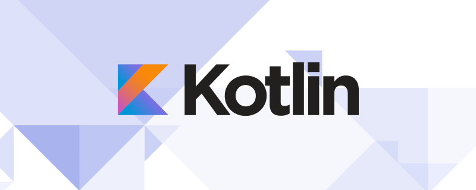

Institución: Instituto Barrio Marina (domingo Palmero 3878 - Castelar)
Título: Bachiller en Comunicación
Año de cursada: 2007 – 2013
Institución: Universidad de Hurlingham
Título a obtener: tecnicatura en informática
Año de ingreso: 2019
Estado: en curso
Lenguaje de programacion: Python(intermedio), Kotlin(POO), Java(intermedio), C(basico). Redes Informatica: Modelo OSI TCP/IP con sus respectivos protocolos. Sistemas Operativos : conocimientos(intermedio). Bases De Datos: Modelos MER y DER. ingles: Habla(basico), lectura(intermedio).